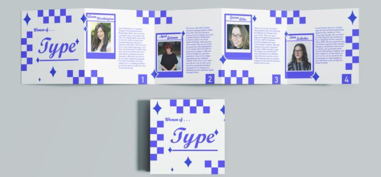

Type Designer Bookletz
This is a Booklet that I made in my Shophmore year. We were to choose four popular designers, out of a handful, and make a booklet discussing who they were. I chose to go with four of the woman on the list, hence why I called it 'Women in Type'.

When first given this assignment, I had a hard time with the layout. I wanted to make something that would stand out because I assumed that more was better. With critique from the class, I ended up going with the design of mine that was the least complex. At the time, I thought it looked too plain but now, I feel that I made a good choice sticking with this design and layout.